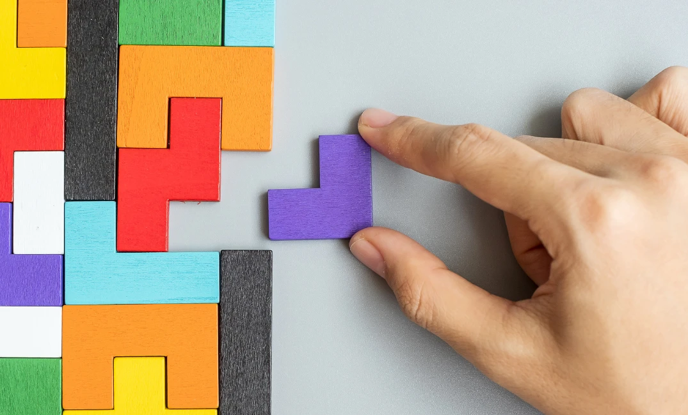
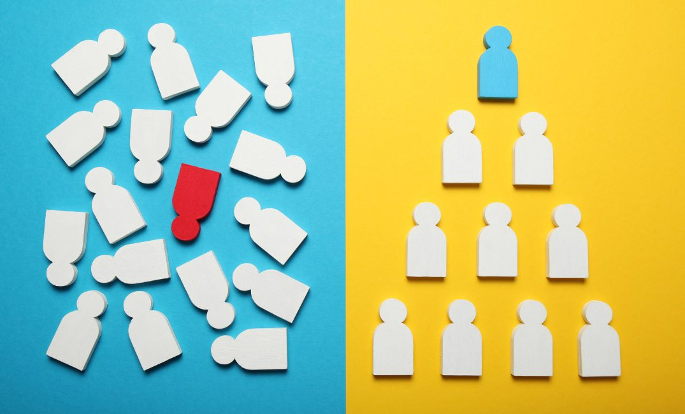
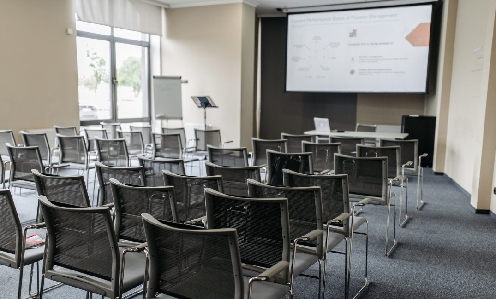
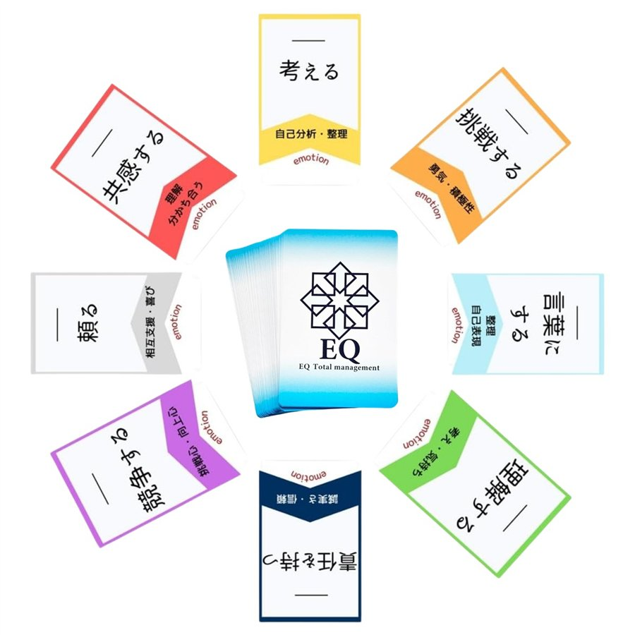

成長が、
経営者の時間で止まる。
すべての判断が経営者に集まると、会社のスピードは経営者一人の時間を超えられません。
EQ Business Nexus
01 / 03
Scroll
Growth begins with No.2.
会社の成長は、右腕から始まる。
人が増え、事業が広がるほど、
経営者一人で決められることには限界があります。
Issues
その原因は、右腕となるNo.2がいないことかもしれません。
01
現場の判断まで、
すべて自分が抱えている
02
任せたいのに、
任せられる人がいない
03
指示を待つ社員が多く、
自分から動く人が育たない
04
経営者の思いが、
現場まで届かない
05
事業の次の一手を
考える時間がない
Why No.2
すべての判断が経営者に集まると、会社のスピードは経営者一人の時間を超えられません。
決めるのがいつも経営者だと、社員は指示を待つようになります。人は、任されることで育ちます。
経営者の思いを現場に伝え、現場の声を経営者に届ける人がいないと、理念は言葉だけで終わります。
新しい事業、次の一手、後継者づくり。経営者にしかできない仕事に向き合うために、右腕が必要です。
No.2の育成は、
人事の課題ではなく、
経営の課題です。
Our View
人は、指示だけでは動かない。
気持ちを分かってもらえたとき、
自分から動き出す。
No.2は、経営者の指示をそのまま伝える人ではありません。
経営者の思いを理解し、現場の声を受け止め、両方をつなぎながら自分で判断して動く人です。
Top
会社の思いと、
進む方向を示す
No.2
両方の思いをつなぎ、
自分で判断して動く
Team
声を届け、
力を発揮する
育てるときに大切にしている、4つのこと
No.2を育てるとは、人の気持ちを受け止め、
組織の目的に沿って自分で判断できる人を育てることです。
Program 10
経営者の右腕として、自分で判断し組織を動かせるNo.2を育てます。
01 — Grow
対話で本人の思いや不安を知り、役割と期待をすり合わせながら、右腕として育てます。
02 — Accompany
候補者がいる場合は、実際の組織運営に伴走し、仕事と判断を少しずつ任せながら育てます。
03 — Hand over
必要に応じて、波多野輝未が一時的にNo.2の役割を担い、実務を候補者へ引き継ぎます。
About
どんなに良い戦略や制度があっても、それを動かすのは「人」です。
人がどう感じ、どう受け取り、どう判断して動くか。ビジネスの課題の多くは、ここにつながっています。
EQ Business Nexusは、EQ（自分と人の可能性を活かす力）とEQ認識理論を、経営・事業・組織づくり・人材育成に活かし、実際の形になるまで伴走する個別支援です。
はじめに、一緒に整理すること
そのうえで、必要な商品・サービス・組織・育成の仕組みを、一緒に設計します。
Features
01
EQ × Business
人の感情・受け取り方・判断・行動を見るEQの視点と、ビジネスの設計を組み合わせます。商品や売上だけでなく、人や関係性の課題まで一緒に整理します。

02
Tailor-made
目的、事業の規模、組織の状態によって、必要な支援は変わります。決まったパッケージを当てはめず、内容を個別に設計します。
03
Implementation
計画をつくって終わりではありません。商品にする、仕組みにする、人に伝える、運用して改善する。実際に動くところまで伴走します。
Services
10の支援内容を、4つのテーマに分けてご紹介します。
A
EQや自分の専門性を、商品・サービス・事業にします。「何を、誰に、どんな価値として届けるか」を整理し、形にします。
B
知ってもらう、体験してもらう、次のサービスにつなぐ。お客様との最初の接点と、その後の流れをつくります。

C
人が育ち、自分から動き、協力し合える組織へ。理念を言葉だけで終わらせず、日々の行動につなげます。

D
自分一人で提供する形から、人を育てて価値を届ける事業へ。続けられる仕組みに整えます。

06
個人セッション、講座、研修、チームづくりなど。EQコアカード®を、自分のビジネスでどう活かし、どう届けるかを一緒に考えます。
09
これから経営者になる人、組織を担う人のための伴走です。経営・事業・人材育成・組織づくりを学びながら、人を活かせるリーダーへ成長していきます。
Process
今どこにいて、何が止まっているのかを、一緒に整理します。
目指す姿をはっきりさせ、そのために必要な支援をご提案します。
商品・サービス・組織・育成の仕組みなどを、目的に合わせて設計します。
実際に動かし、運用・改善まで伴走します。
※ 支援の内容・期間・回数・料金は、ご相談の内容によって異なります。
For You
個人、次世代リーダー、経営者、事業責任者、企業・組織まで。
すでに経営をしている方だけのサービスではありません。
Contact
支援の内容・期間・料金は、ご相談の内容に合わせてご提案します。
まずは、今の課題や、これからつくりたい事業・組織についてお聞かせください。
No.2・右腕人材の育成をご検討の方へ
No.2育成について相談する企業・組織での活用をご検討の方へ
お問い合わせはこちら